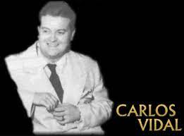
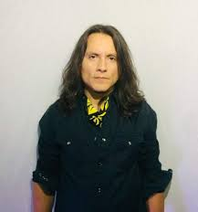

Adolfo Ángel Alba

Adolfo Ángel Alba es un músico, compositor y productor musical mexicano conocido por ser tecladista, director, compositor, segunda voz del grupo Los Temerarios. También conocido por los seguidores del grupo como "El Temerario Mayor".
Gustavo Ángel Alba

Gustavo Ángel Alba es un cantante y compositor mexicano conocido por ser la voz principal y guitarrista del grupo Los Temerarios. Es conocido como "El ángel del grupo".
Fernando Ángel Gonzáles
 "
"
Fernando Ángel es un músico mexicano que fue miembro del grupo ranchero Los Temerarios. Fernando Ángel es primo de Adolfo y Gustavo Ángel, integrantes originales de la banda. Ingresó al grupo en 1982, cuando aún se conocía como Grupo Brisas. En 1983, el grupo cambió su nombre a Los Temerarios. Fernando toca el bajo
Carlos Abrego Cavazos
Canal oficial de CHARLY ABREGO Artista, compositor, arreglista, productor y conductor del exitoso programa de entrevistas EL BUNKER DE CHARLY ABREGO.
Mario Alberto Ortiz
Soy un hombre de 54 años, padre de dos, abuelo de tres hermosos niños, con el objetivo de aprender y convertirme en desarrollador de tecnologías de la información, reseteando el chip.
Karlo vidal
"Karlo" podría ser un nombre artístico. Hay casos como Carlos Vidal, expareja de la conductora peruana Gisela Valcárcel, quien utilizaba "Carlos" como nombre público
Jonathan Amabilis Galicia

Junto a Karlo Vidal, integra un grupo musical llamado Vidar. Se dedican a realizar covers de la famosa banda Los Temerarios [YouTube].
Samuel Gusmán Magdaleno

Samuel "Sammy" Guzmán fué el vocalista principal (paralelamente con Gustavo Angel Alva) hasta el año de 1988 y colocó en el candelero importantes éxitos que sentaron las bases para iniciar la fama de "La Revelación Romantica de los 90´s"